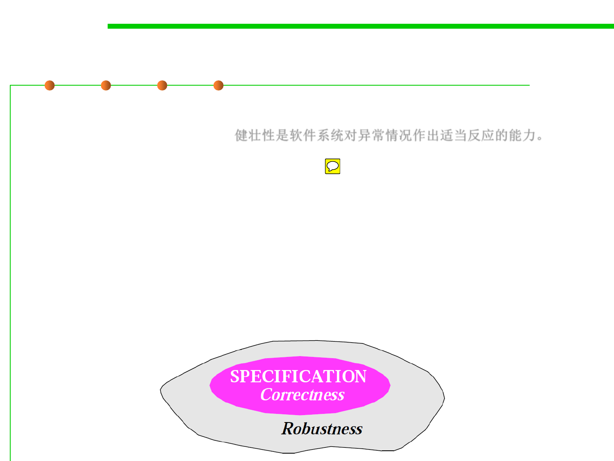

External 2: Robustness
1.2 Quality Objectives of Software Construction
▪ Robustness is the ability of software systems to react appropriately
to abnormal conditions.健壮性是软件系统对异常情况作出适当反应的能力。
– Robustness complements correctness.
– Correctness addresses the behavior of a system in cases covered by its
specification;
– Robustness characterizes what happens outside of that specification.
▪ Robustness is to make sure that if such cases do arise, the system
does not cause catastrophic(灾难性的) events; it should produce
appropriate error messages, terminate its execution cleanly, or
enter a so-called “graceful degradation(降级)” mode.